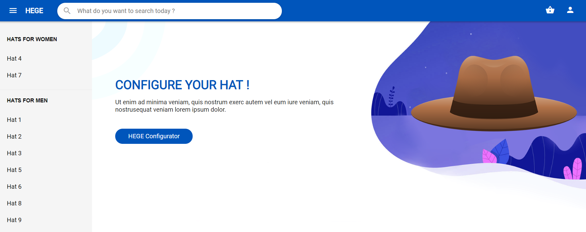
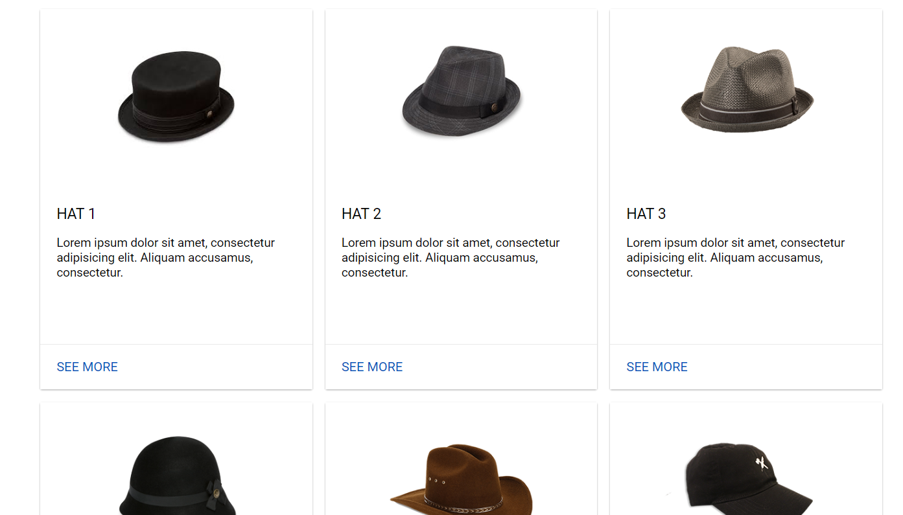
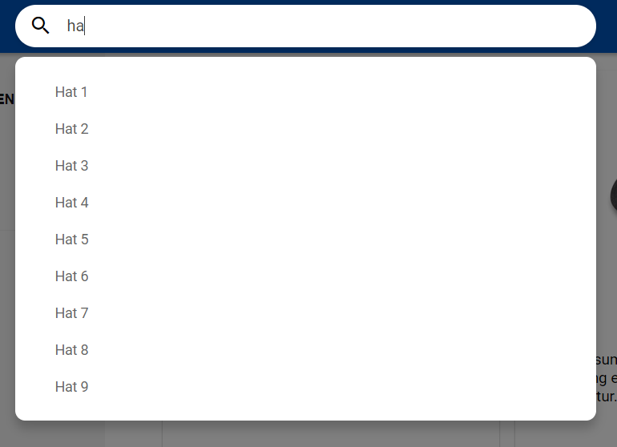
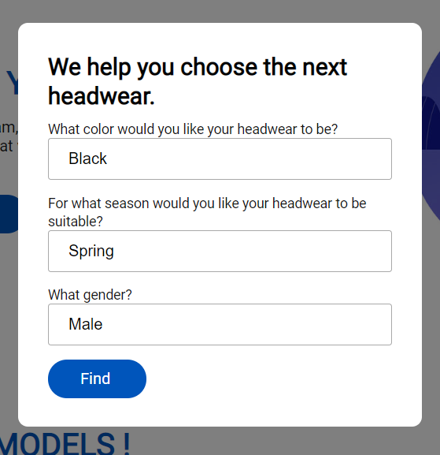
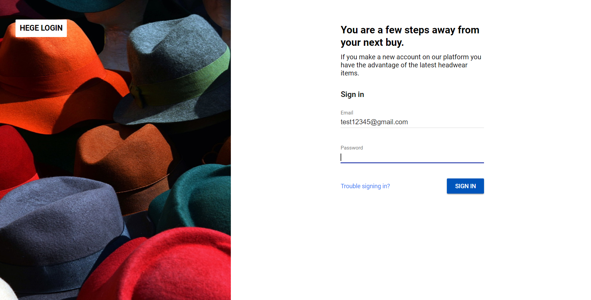

Community Draft
HEGE is using the popular and efficient side-panel layout. It is optimized to be used without having to make a lot of effort, each component being easily accessible. From the main screen you can see the main elements such as the Search or Configurator.
From the beginning, you can select a hat by clicking on the sidebar or the list of hats on the main page. To select a hat from the main list, press the see more button.
 In order to search for a hat name, user must click on the search box. He writes the name of the desired hat and a list of hats will appear to help him. After seeing the hat that he is interested in, user must click on it to be redirected to the hat details page.
To help our users, we implemented the HEGE Configurator feature, where the users can choose from a list of preferences. After our configurator interrogates database with the users preferences, we show a list of possible interesting products.
We identify each user unique, based on a Login system. When users wants to Login he presses on the distinctive icon, where is redirected to Login page. Then user must enter his email address. If the email address it does not exist then a register will appear asking user to enter his name and password.
When the user finds a hat that he likes than from the product page he can add it in to the basket. In the basket menu if he changes his mind then he can press remove button. If he wants to test a hat he can press AR Button. The AR function only works on Android.

Picture showing how items are arranged in cart.